Rear Axle / Differential
26 parts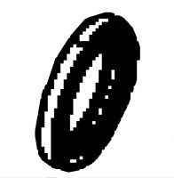
1992 - 1996 & 2000 - 2013 Dodge SRT Viper Axle Drive Shaft Seal - 04626696
Part # 4626696
$34.00
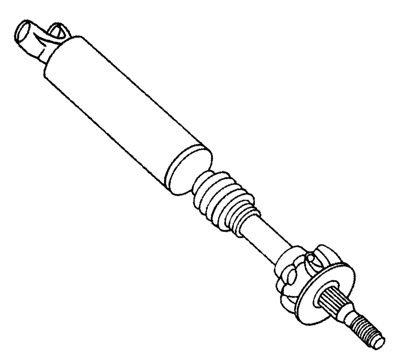
1992 - 2002 Dodge Viper Axle Half Shaft - 04763676AB
Part # 04763676AB
$999.00
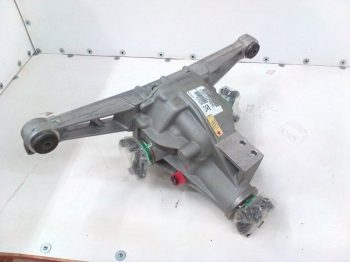
1992 - 2002 Dodge Viper Complete Rear Axle - 04763897AC
Part # 04763897AC
$3,575.00
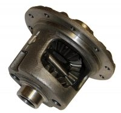
1992 - 2002 Dodge Viper Differential Case Assembly - 05014114AA
Part # 05014114AA
$984.00
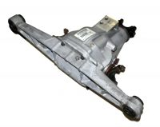
Out of stock1992 - 2002 Dodge Viper Differential Rear Axle - 04763897AC
Part # 4763897AC
$1,550.00
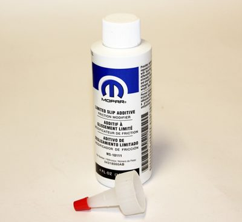
Out of stock1992 - 2010 Dodge Viper Limited Slip Additive - 04318060AB NO Cap
Part # 04318060AB 04318060ad
$8.00
 Out of stock
Out of stock1992 - 2010 Dodge Viper Rear Wheel Bearing Gasket - 4848171
Part # 4848171
$10.00
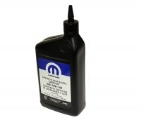
Out of stock1992 - 2010 Dodge Viper Synthetic Differential Gear Lubricant - 68218657AA
Part # 68218657AA
$33.00
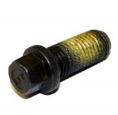
Out of stock1992 - 2013 Dodge SRT Viper Driveshaft U-Joint Clamp Bolt - 06502581
Part # 6502581
$8.95
1992 - 2013 Dodge Viper Differential Housing Plug - 04626710
Part # 04626710
$19.95
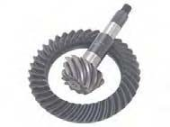
1996-2000 Dodge Viper Differential Ring and Pinion Set 3.73 Gear
$689.99
 Out of stock
Out of stock2000 - 2010 Dodge Viper 3.55 Rear Gear Set - P5007525
Part # P5007525
$529.99
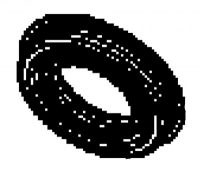
2001 - 2013 Dodge SRT Viper Drive Pinion Seal - 05019843AA
Part # 05019843AA
$59.99

2003 - 2010 Dodge Viper SRT10 Axle Half Shaft - 05038200AB
Part # 05038200AB 05038200AA
$1,700.00
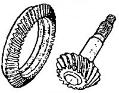
2003 - 2010 Dodge Viper Stock Rear Gear Set - 05093384AA
Part # 05093384AA
$450.00
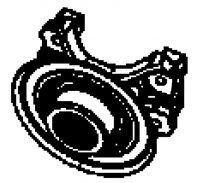
2003 - 2017 Dodge Viper SRT10 Drive Shaft Pinion Yoke - 05093385AA
Part # 05093385AA
$139.00
 Out of stock
Out of stock2003-2010 Dodge Viper SRT10 Visco Loc 2008 Limited Slip Differential 3.07 Gears - 05038307AE
Part # 05038307AE
$2,999.99
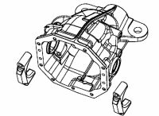
2008 - 2010 Dodge Viper Differential Axle Housing - 68046922AA
$825.00
 Out of stock
Out of stock2008 - 2010 Dodge Viper Drive Shaft - 05037990AA
Part # 05037990AA
$375.00
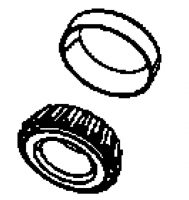
2008 - 2010 Dodge Viper SRT10 Drive Pinion Inner Bearing Kit - 68046924AA
Part # 68046924AA
$61.00
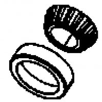
2008 - 2014 Dodge SRT Viper Drive Pinion Outer Bearing Kit - 68046925AA
Part # 68046925AA
$54.00

2013 SRT Viper 3.55 Rear Gear Kit - fits all 2001 - 2017 Vipers
Part # 68203459AA
$699.00

96-02 VIPER REAR TOE LINK - INNER ONLY - 4709309 52037501 4763159AC
Part # 4709309 52037501 4763159AC
$399.00
03-10 VIPER *PAIR*REAR TOE LINK, INNER TIE ROD 4763159AC 4709308 5290168AC
Part # 4763159AC 4709308 5290168AC
$775.00
Out of stock
Ring Gear Set 3.73
$399.00
VIPER STOCK Ring Gear Set 3.07
Part # 5093384aa
$450.00